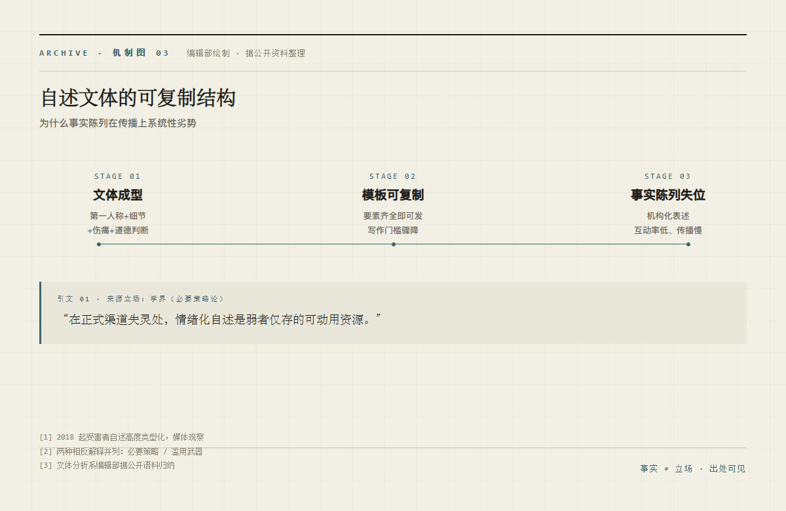

当自述成为文体，事实就输了
产生期观察 · 之三 · 范围：2017–2019 年「受害者自述」的文体化。不转述任何具体指控内容。
这一篇看的是产生期的第三块地基，也是离「人」最近的一块：文本。前两篇讲了流量验证（2016）与算法定价（2018），本篇讲承接这两者的文体——「小作文」，即高度个人化的受害者自述长文。它在 2017 年还只是普通的长文案，2018 年前后迅速类型化为一种可复制的情感动员文体[1]。文体本身不是本篇的审判对象；要拆的是它与分发规则咬合之后产生的传播不对称。
先做两件事。第一，纪律重申：本篇不转述、不评价任何具体事件中的指控内容，只分析文体结构——涉及性侵、家暴等未证实指控，按本专题纪律一律不展开[2]。第二，同一现象存在两种相反的解释，本篇并列呈现、不替读者选边，因为这个分歧本身就是最重要的素材。
抛开个案内容，只看文本形态。2018 年之后的典型「小作文」几乎都具备同一组要素：第一人称叙事（「我」的经历不可替代）、高密度细节（时间、地点、对话，营造在场感）、伤痛展示（情绪状态的直接描写）、道德判断前置（对方的定性在叙事开头或结尾给出）、以及诉求或告别（要么求公道，要么宣布离开）。这五个要素齐全时，文本的感染力与传播力同时到位。它们是可归纳的，也因此是可复制的——写作门槛从「你得会写」降到「你照要素填」。
类型化的直接后果：这类文本的产能被解放了。而它的对手——机构化的事实陈述（警方通报、法院文书、公司声明、核查报道）——在文体上天然吃亏：它要守程序、留余地、不出结论，语气克制到近乎冷淡。在互动定价的分发系统里，一份「经查，某某情况如下」的通报，互动率被一篇细节饱满的自述按在地上摩擦。这不是通报写得不好，是两种文体在同一个竞技场里比赛，而裁判只认情绪唤起量。[3]
对「小作文」现象，公共讨论里长期存在两种完全相反的定性。第一种：弱者策略论。在正式渠道（司法、单位、投诉机制）失灵、成本高企或不被信任的地方，个人把自述发到公共舆论场，是弱者仅存的可动用资源；情绪动员不是堕落，是在资源极度不对称下唯一的杠杆。第二种：武器滥用论。当自述绕开证据与程序、直接以情绪触发定性，它就在事实上架空了「谁主张谁举证」的公共准则；个案的公道诉求与群体性的叙事权力合流之后，被指控者在程序结论出来之前就已经社会性死亡。
引文 01 · 来源立场：学界（必要策略论）
"在正式渠道失灵处，情绪化自述是弱者仅存的可动用资源。"
—— 公共讨论中「弱者策略论」的代表性论点（编辑部综述转述，非单一作者原话）。立场：为自述辩护一方。
引文 02 · 来源立场：学界（武器滥用论）
"当情绪可以直接触发定性，程序就成了舆论的注脚。"
—— 公共讨论中「武器滥用论」的代表性论点（编辑部综述转述，非单一作者原话）。立场：为程序辩护一方。
本专题的立场是：两种解释都描述了真实发生的事情，且互相以对方为食。正式渠道越失灵，自述武器就越被依赖；自述武器用得越多，程序公信就越被消耗，正式渠道显得更失灵。这是一个互激结构，不是一场可以判胜负的辩论。谁在其中受损最重？是那些既不擅长情绪化表达、又没有现成叙事模板可用的人——他们连进入竞技场的入场券都拿不到。这正是「男性叙事在公共场域逐步失语」的机制性入口之一，但它绝非唯一受害者，机制的误伤是全面的。
至此，产生期的三个条件齐了：流量验证了情绪（2016）、算法给情绪定了价（2018）、文体让情绪可批量生产（2018 起）。三者咬合，机器开始空转。接下来的四篇进入演变期：这台机器在微博、在小红书、在制度错位与语言贬值里，怎么一步步加满油。

▲ 图 03：自述文体的可复制结构 · 编辑部据公开语料归纳。见注 [1][3]。
注 · SOURCES
[1] 「小作文」从 2017 年普通长文案演变为情感动员文体，据媒体评论与公开语料的通行观察，系描述性判断。
[2] 本文不转述任何具体事件中的指控内容；涉及性侵、未证实犯罪指控，按专题纪律不展开、不评价。
[3] 「文体竞争中的传播不对称」为编辑部据分发机制所作的分析性推论，非实证统计结论。
[4] 引文 01、02 均为对两种公共立场的综述性转述，不是可逐字核对的单一文献原文；两种解释并列，本文不择一。
口径说明
本文为社会学观察，不站任何性别立场，作者性别不作为论证依据。事实据公开来源，观点归属已标注；涉及未证实指控不转述、不评价。拆解机制是为了理解，不是行动指南。
出口：与其争论「小作文该不该存在」，不如追问一个更可操作的问题——正式渠道（投诉、仲裁、司法、平台申诉）能不能把「被听见的成本」降到比写一篇自述更低。渠道好了，武器自然降温；渠道不好，禁掉武器只会把弱者逼回沉默。